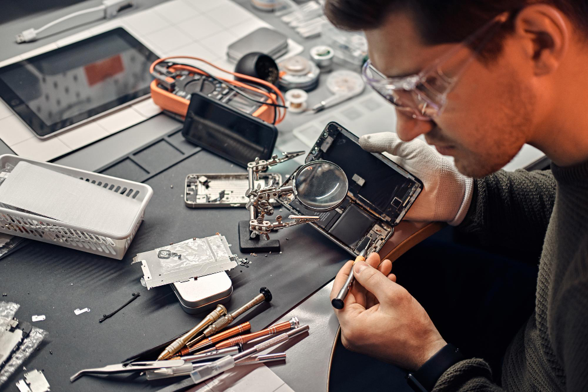
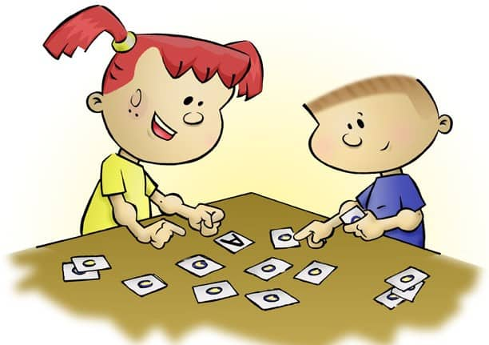

A Computer Science student interested in UI design, web development, software quality, and data-driven applications.
View My WorkI am a Bachelor of Science in Computer Science student at the University of Ottawa. My background includes software development, data analysis, testing, and building full-stack and mobile applications. I enjoy creating digital tools that are clear, reliable, and useful for users.
Through my academic projects and work experience, I have worked with technologies such as Java, Python, JavaScript, SQL, HTML/CSS, React, Node.js, Firebase, and PostgreSQL. This portfolio will be used throughout SEG3125 to present my design work and show how my understanding of user interface design develops over the semester.
My background combines software development, data analysis, testing, and user interface design. I wanted this portfolio to reflect the areas I am currently building experience in.
Experience building web applications with React, Node.js, Express, SQL, and PostgreSQL.
Experience working with data workflows, validation, structured outputs, and reporting tools.
Experience with software testing, Selenium scripts, debugging, and defect documentation.
Currently developing stronger visual communication and interface design skills through SEG3125.
My current design process combines my programming background with the visual communication principles I am learning in SEG3125. I start by understanding the purpose of the interface, then I plan the layout, build a working version, test the experience, and improve the design based on feedback.
Identify the goal, audience, and main user needs.
Organize layout, content, navigation, and visual hierarchy.
Create the interface using HTML, CSS, Bootstrap, and JavaScript.
Test links, review clarity, and refine the design based on feedback.
These future case studies will be completed throughout the semester. Each card currently links to a placeholder page.


A future online shopping interface with product browsing and checkout design.
View ProjectA future analytics site focused on sports statistics and data visualization.
View Project